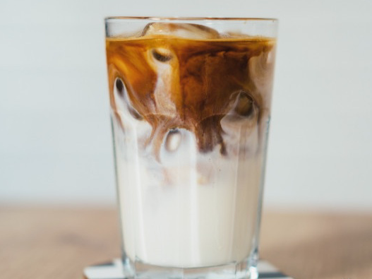
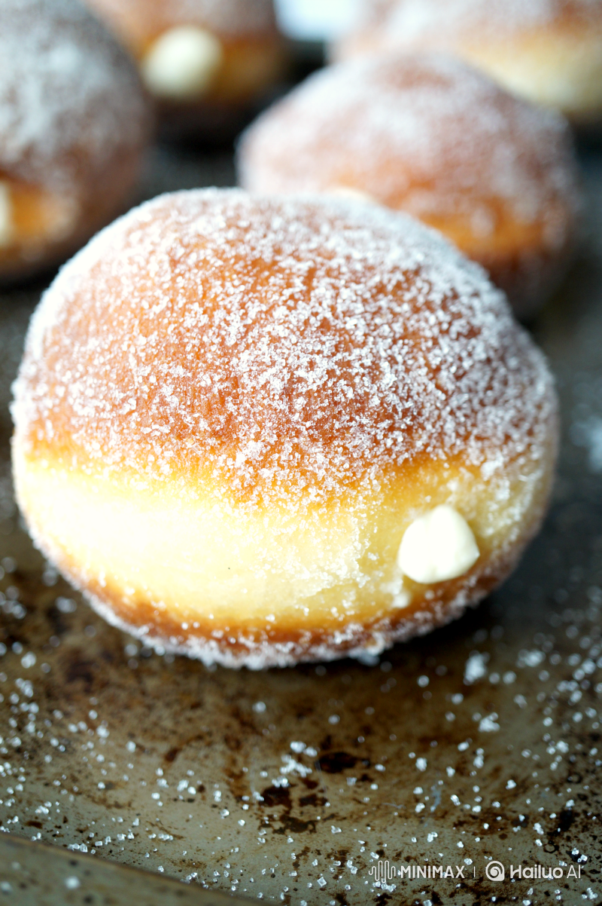
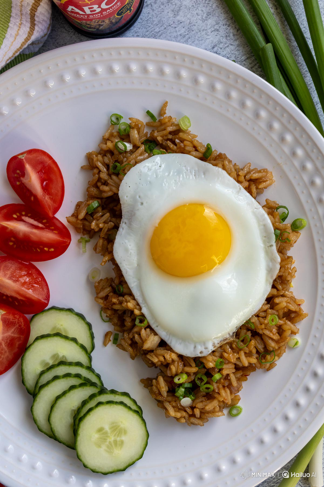

Katalog
Menu Pilihan Terbaik
Lihatlah semua pilihan yang kami tawarkan. Untuk pemesanan, silakan klik tombol "Pesan Sekarang" di atas atau kembali ke halaman utama.

Kopi Antrik
Espresso, susu, dan gula aren otentik yang diracik dengan *passion* ala manusia.
Rp 25.000Es Kopi Garam Laut
Kopi susu dengan sentuhan unik *sea salt caramel*, memberikan rasa manis, asin, dan creamy yang seimbang.
Rp 28.000Sajian Benaman
Kopi tubruk metode manual. Pahit dan otentik. Pilihan tepat bagi penggemar kopi murni.
Rp 22.000Cokelat Manusia
Campuran cokelat pekat dan susu segar berkualitas tinggi. Kenikmatan tanpa kafein.
Rp 30.000

Donat Bomboloni
Donat lembut dengan berbagai isian *premium*, cocok sebagai teman kopi atau camilan.
Rp 18.000

Nasi Goreng Mata Sapi
Menu andalan: nasi goreng pedas dengan telur mata sapi. Rasa akrab yang mengenyangkan.
Rp 35.000